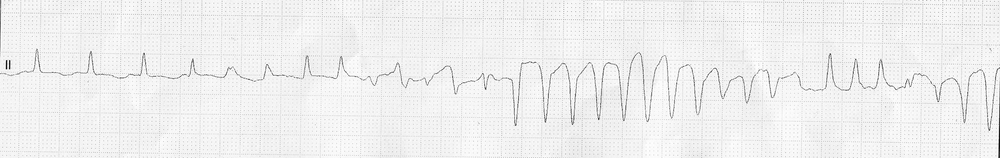
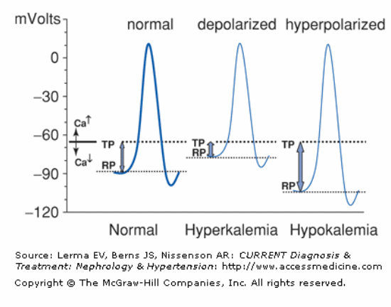
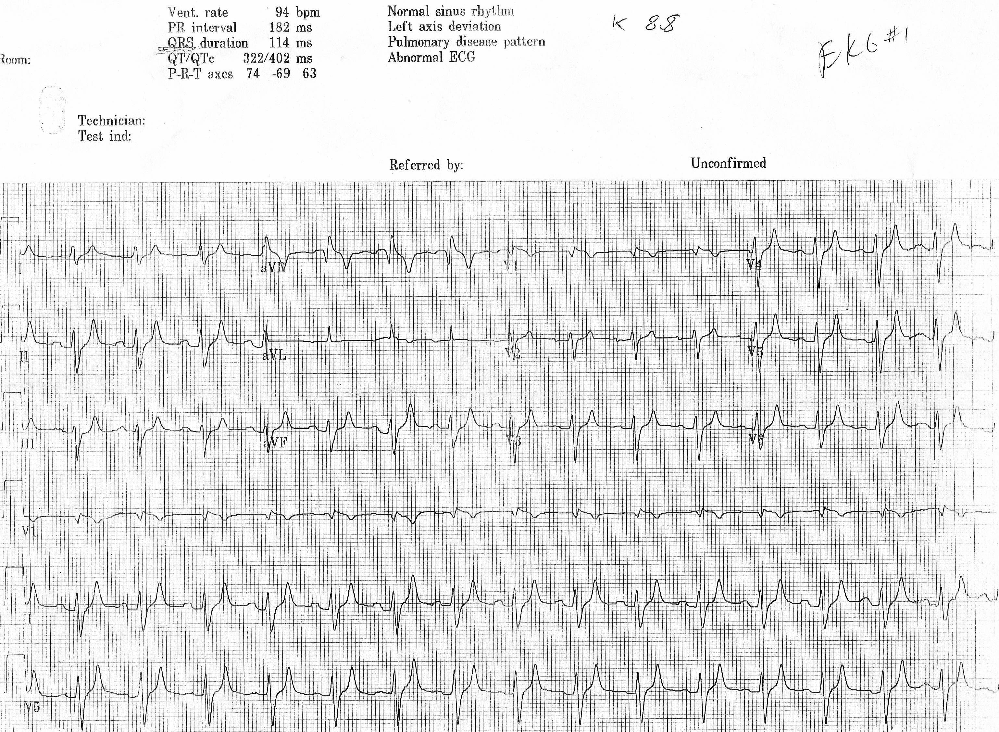
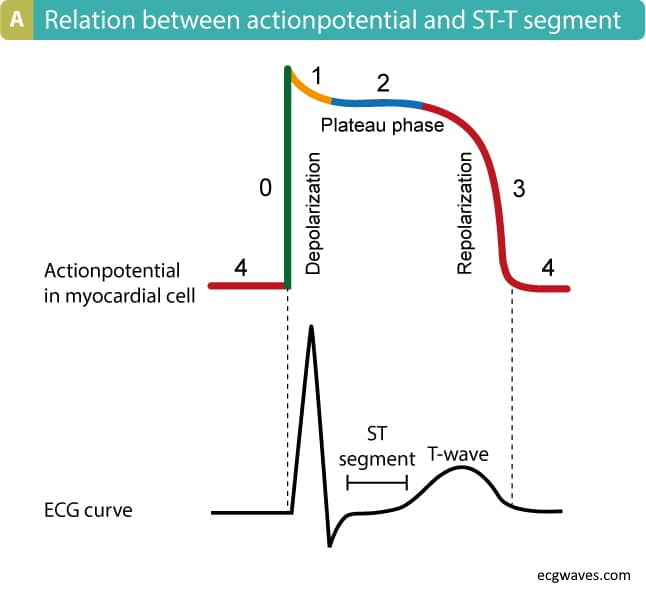
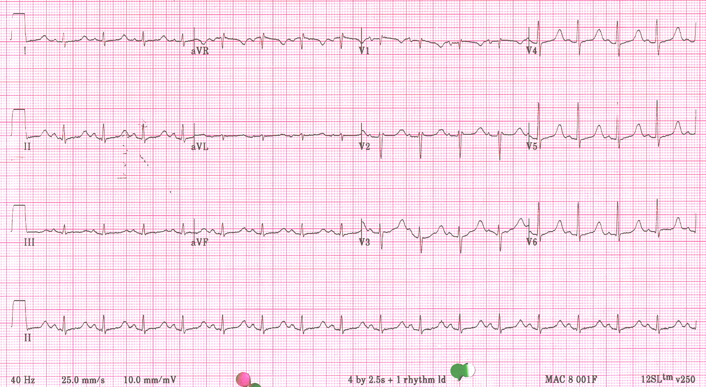
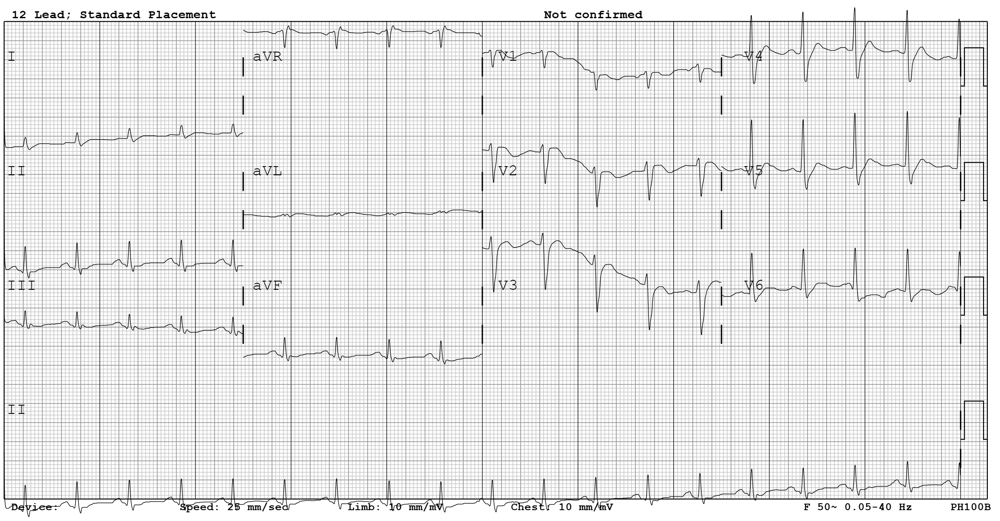
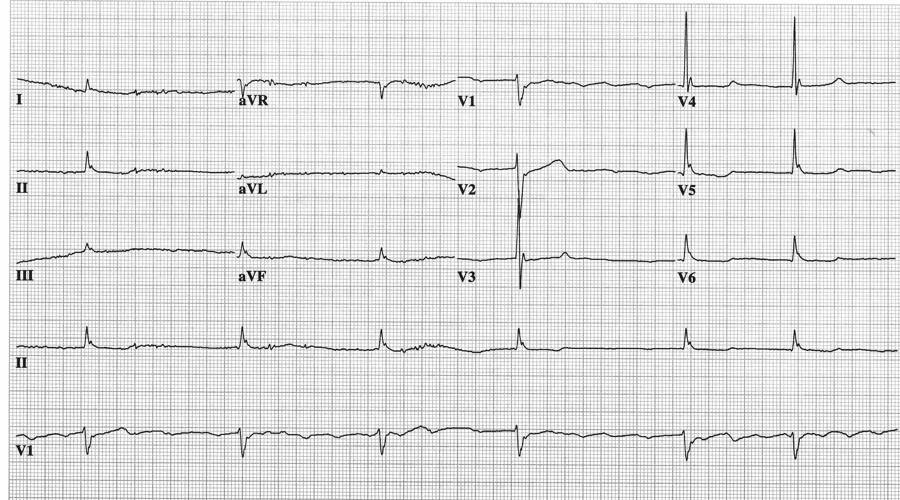
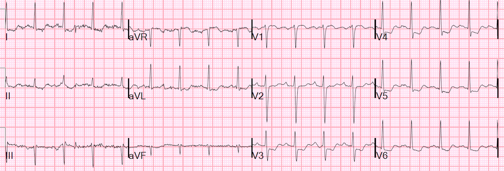

K= 1.2. Noted with generalized ST depression, prolonged QTc, and presence of U wave.

Severe kypokalemia can induce polymorphic VT and sudden cardiac arrest.

The potassium
gradient across the cellular membrane is the most important factor
in establishing this membrane potential.
During hyperkalemia, the gradient is reduced resulted in the reduction of phase 0 of action potential
and slowing of the impulse conduction.

Narrow-based and symmetical peaked T wave in early phase of hyperkalemia.
Sinus arrest and intraventricular conduction delay.
Sine wave: QRS complex continues to widen and blend with T wave.
ECG changes in hypo & hyper K+.
electrolytes • Calcium

Calcium
is the ion of the phase 2.
Imbalance of Calcium affects ST segment.

Hypocalcemia: prolonged ST segment.

68F with metastic CA with serum Calcium of 14 mEq/l.
Osborn wave (positive deflection at J point), short QTc, and ST elevation.
metabolic & toxicity

During therapeutic hypothermia.
ECG changes during hypothermia
bradycardia,
prominent J waves or Osborn waves
, prolonged PR/QRS/QTc, sinus arrest,
and VT/VF.
J waves syndromes
Prominent J-wave has been observed in both inherited and acquired conditions propmting
their designation as J wave syndromes. The proposed mechanism includes the outward shift
of repolarization current during early phase of action potential.
(Antzelevich, C. J Electrocardiol 2013.)
Causes of J waves syndromes
Leads displaying J-wave
Early repolarization syndrome (ERS) type I
Lateral leads (I, V4-V6)
ERS type II
Inferior leads (II, III, aVF)
ERS type III or Global ER
Global
Brugada Syndrome
RV leads (V1-V3)
Hypothermia or hypercalcemia mediated
Global

78F was found unresponsive in a car with running engine.
Carbon Monoxide Poisoning
Cardiovascular sequelae of CO poisoning are frequent, with myocardial injury assessed by
biomarkers or ECG in up to 1/3 of patients.
Incidence of Torsades de Pointes by individual drug
in an individual patient is small.
Patients who developed ventricular arrhythmias are
among those with clinical scenarios
that further reduced their repolarization reserve
and cause excessive QT prolongation.
Electrolytes Imbalance can disrupt the electrical properties of cardiac myocytes,
causing abnormalities in QRS duration, QT interval, and T wave morphology.
Pathology in other organs may cause stress to the heart, resulting in
strain pattern or ischemic pattern in the ECG.
Many of ECG abnormalites from non-cardiac causes are non-specific.
Clinical correlation remains invaluable in diagnosis and treatment.


 heartRhythmBox.com
heartRhythmBox.com